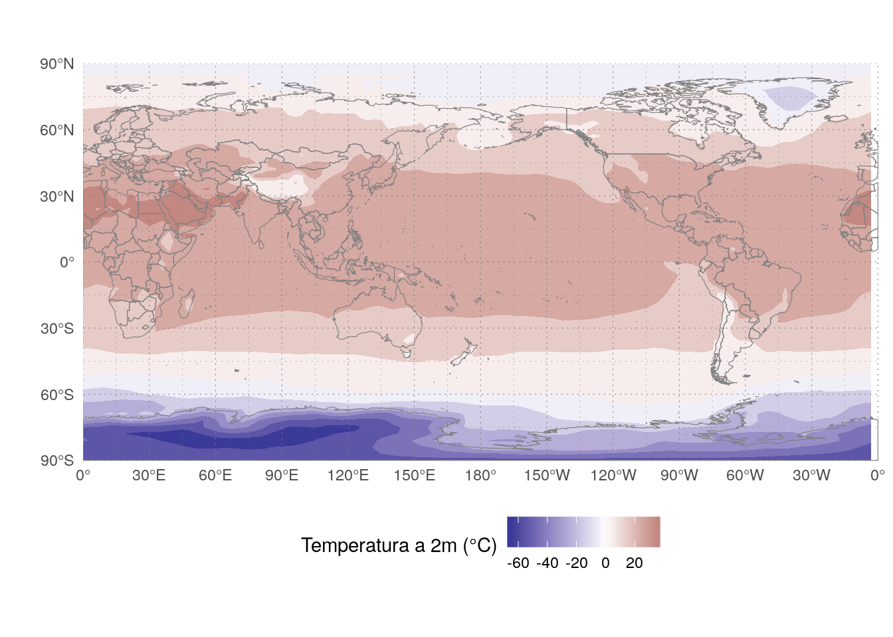

Using ecmwfr to see how the climate changed
For my research I needed to download weather data from ERA-Interim, which is a big dataset generated by the ECMWF with gridded weather data. Getting long term data through their website is very time consuming and requires a lot of clicks. Thankfuly, I came accross the nifty ecmwfr R package that allowed me to do it with ease. One of the great things about open source is that users can also be collaborators, so I made a few suggestions and offered some code.
Now that a new version is on it’s way to CRAN, I wanted to show a quick example of what you can do with the package.
I was born on august 1988, how has the surface temperature of the planet changed from then?
To download data from the ECMWF servers you need to have an account. So if you’re following at home, you’ll need create one and add the API key to the ecmwfr keyring. This is all done interactivelly with this command:
library(ecmwfr)
wf_set_key(service = "webapi")This will take you to the correct URL where you can get your key. And set everything out.
Now, in order to get the data from the ECMWF servers I need to have a valid request. Unfortunatelly, since it hosts a huge number of different datasets with different data streams and time resolution, building a valid request from scratch is rather complicated. The easiest way to work with it is going to their to the website and use their point and click interface to create a basic request for the dataset of interest. In my case, I will use monthly data from ERA Interim.

ERA Interim request
As you can see, there’s no way of retreiving every year in one request using the web interface. But a the bottom of the page there’s a link that says “View the MARS request”.

ERA Interim MARS
Here, I get a valid request that I can modify slightly. In R, I converted this template into a list using the “MARS to list” Rstudio addin (but you can do it manually). I added format = "netcdf" at the end to get the data as a NetCDF file.
I then pass that list to the wf_archetype() function.
ERAI_monthly <- wf_archetype(
request = list(
class = "ei",
dataset = "interim",
date = "19790101/19790201/19790301/19790401/19790501/19790601/19790701/19790801/19790901/19791001/19791101/19791201",
expver = "1",
grid = "0.75/0.75",
levtype = "sfc",
param = "167.128",
stream = "moda",
type = "an",
target = "output",
format = "netcdf"),
dynamic_fields = c("date", "grid", "target"))Now ERAI_montly is a function with arguments “date”, “grid” and “target”. The reason I don’t just change the list willi nilli is that I want to be sure I always get a valid request to the ERA Interim dataset. For this short example is probably overkill, but usefull in a bigger context.
As you can see, the MARS format for dates can be rather long to type, so I’ll create a custom function to make this easier:
format_dates <- function(dates) {
dates <- as.Date(dates)
paste0(lubridate::year(dates),
formatC(lubridate::month(dates), width = 2, flag = "0"),
formatC(lubridate::day(dates), width = 2, flag = "0"),
collapse = "/")
}
format_dates(c("2018-01-01", "2018-02-01"))## [1] "20180101/20180201"Now I’m ready to downlaod data! I was bown in august 1988, so I will be looking at how the month of august changed since that year. I’m also not terribly interested in local changes, so I’ll use a 3° by 3° resolution.
dates <- seq.Date(as.Date("1988-08-01"), as.Date("2018-08-01"), "1 year")
my_request <- ERAI_monthly(date = format_dates(dates),
grid = "3/3",
target = "data/august_monthly.nc")
str(my_request)## List of 11
## $ class : chr "ei"
## $ dataset: chr "interim"
## $ date : chr "19880801/19890801/19900801/19910801/19920801/19930801/19940801/19950801/19960801/19970801/19980801/19990801/200"| __truncated__
## $ expver : chr "1"
## $ grid : chr "3/3"
## $ levtype: chr "sfc"
## $ param : chr "167.128"
## $ stream : chr "moda"
## $ type : chr "an"
## $ target : chr "data/august_monthly.nc"
## $ format : chr "netcdf"And now, wf_request() to download the data. This will take some. Not because I’m downloading a huge file (is not, about 455kb) but because the ECMWF has to process the request and collect the data. So if you’re following at home, you can go make some tea or, if you’re like me, mate.
wf_request(request = my_request,
user = "eliocampitelli@gmail.com",
transfer = TRUE,
path = ".",
verbose = FALSE)Now that I have my data saved as “august_monthly.nc”, I’ll just need to load it and analyse it. I’ll be using my metR package for that.
library(metR)
library(ggplot2)
library(data.table)august_temp <- ReadNetCDF("data/august_monthly.nc")First a quick look at the data.
str(august_temp)## Classes 'data.table' and 'data.frame': 226920 obs. of 4 variables:
## $ longitude: int 0 3 6 9 12 15 18 21 24 27 ...
## $ latitude : int 90 90 90 90 90 90 90 90 90 90 ...
## $ t2m : num 273 273 273 273 273 ...
## $ time : POSIXct, format: "1988-08-01" "1988-08-01" ...
## - attr(*, ".internal.selfref")=<externalptr>It’s a data frame with a value of t2m for each longitude, latitude and time. The temperature is in Kelvin. Let’s take a look at one field.
august_temp[, t2m_c := t2m - 273.15] # convert to degree celcius
# world map
world <- list(geom_path(data = map_data("world2"),
aes(long, lat, group = group),
size = 0.2, color = "gray50"),
coord_quickmap(),
scale_x_longitude(),
scale_y_latitude())
ggplot(august_temp[time == time[1]], aes(longitude, latitude)) +
geom_contour_fill(aes(z = t2m_c)) +
world +
scale_fill_divergent("2m temperature (°C)") +
metR:::theme_field()
The tropis are warmer than the poles, as it should be.
After getting to know the data, I’ll compute the linear trend of temperature at each gridpoint. I’ll use a very crude method to get the statistical signficance of the trend.
trends <- august_temp[, FitLm(year = year(time), t2m, se = TRUE),
by = .(longitude, latitude)]
trends[, p.value := pt(abs(estimate)/std.error, df, lower.tail = FALSE)]
ggplot(trends[term == "year"], aes(longitude, latitude)) +
geom_contour_fill(aes(z = estimate*10),
breaks = AnchorBreaks(0, 0.25, exclude = 0)) +
stat_subset(aes(subset = p.value <= 0.01),
geom = "point", size = 0.1, alpha = 0.5) +
world +
scale_fill_divergent("2m temperature \ntrend (°C/decade)") +
metR:::theme_field()
Not surprisingly, the trend is positive almost everywhere, although not everywhere statistically significant (using this very crude method). Of note, there hasn’t been much increase in august mean temperature where I live.
I will construct a crude global mean temperature (GMT) timeseries by averaging all gridpoint for each year (weighing by the cosine of latitude). Weighting with the cosine of latitude is important.
gmt <- august_temp[, .(t2m = weighted.mean(t2m, cos(latitude*pi/180))),
by = year(time)]
ggplot(gmt, aes(year, t2m)) +
geom_line() +
geom_smooth(method = "lm") +
scale_y_continuous("2m temperature (°C)")
Again, not surprisingly, global temperature is going up. Let’s compute the rate of increase
trend <- lm(t2m ~ year, data = gmt)
summary(trend)##
## Call:
## lm(formula = t2m ~ year, data = gmt)
##
## Residuals:
## Min 1Q Median 3Q Max
## -0.28121 -0.05954 -0.01535 0.06890 0.28129
##
## Coefficients:
## Estimate Std. Error t value Pr(>|t|)
## (Intercept) 2.558e+02 4.713e+00 54.270 < 2e-16 ***
## year 1.676e-02 2.353e-03 7.121 7.77e-08 ***
## ---
## Signif. codes: 0 '***' 0.001 '**' 0.01 '*' 0.05 '.' 0.1 ' ' 1
##
## Residual standard error: 0.1172 on 29 degrees of freedom
## Multiple R-squared: 0.6362, Adjusted R-squared: 0.6236
## F-statistic: 50.71 on 1 and 29 DF, p-value: 7.772e-08The rate of 0.17 °C/decade is consistent with estimates using better methods.